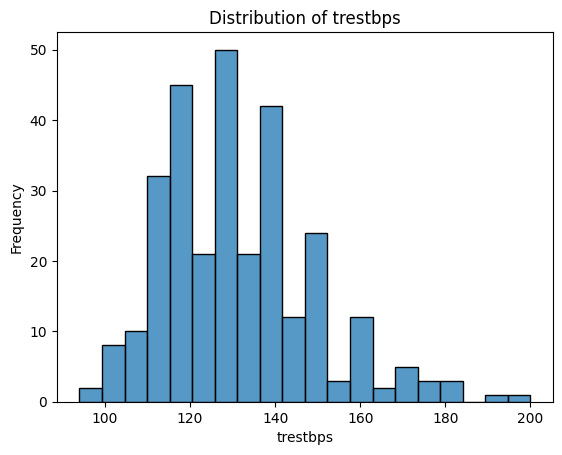
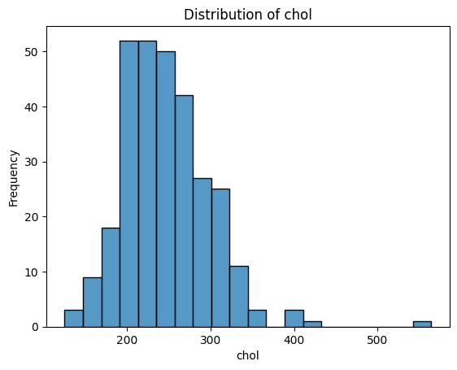
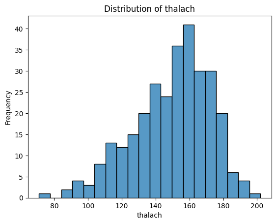
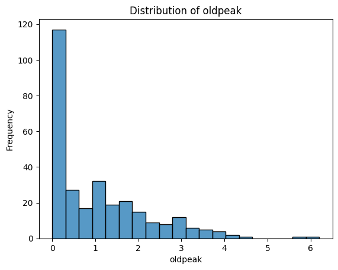
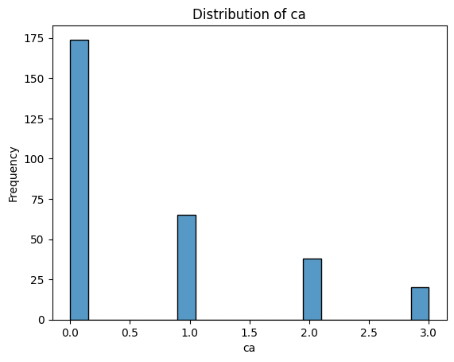
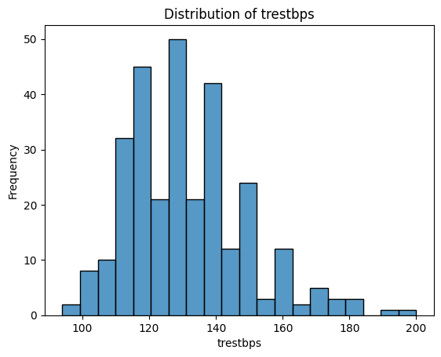
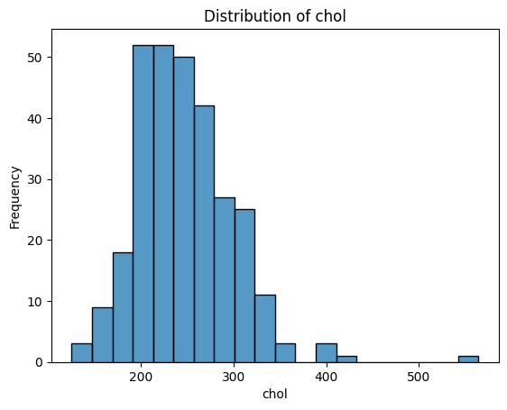
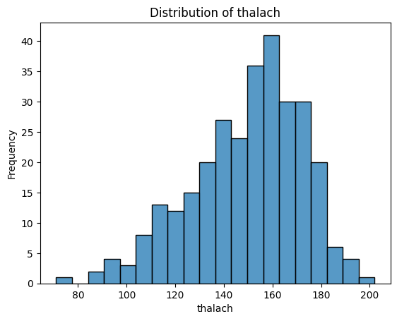
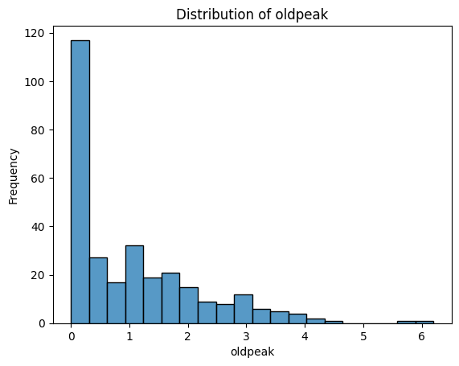
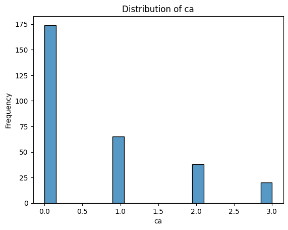

M8: Final Practice on a Heart Disease Dataset (with Solutions)#
Congratulations, you have made it to the last module! Throughout the course, you have covered the fundamental knowledge and packages needed to apply Python in bioinformatics.
The aim of this module is to help you consolidate what you have learned. We will introduce a new dataset for you to analyse and explore. You’ll be given a series of exercises designed for you to complete independently, with minimal external assistance.
If you find yourself stuck, make sure to give it a proper attempt on your own first. If that doesn’t resolve the issue, revisit earlier modules to refresh your memory. And if you’re still unsure, feel free to use Google. Indeed, knowing how to use Google to look up code/ functions to accomplish a task is an important skill on its own. As a last resort you can use the solution sheet.
Loading the Dataset#
The dataset that we will be using is the Heart Disease Dataset from UC Irvine Machine Learning Repository: https://archive.ics.uci.edu/dataset/45/heart+disease
This dataset is intended for a machine learning task: given a set of patient features, the goal is to predict whether the patient has been diagnosed with a heart disease (the target variable). While building such a model is beyond the scope of this course, you will conduct some initial exploratory analyses to become familiar with the dataset and its contents.
These exploratory analyses are often an essential first step, regardless of whether your aim to develop a machine learning model or to pursue other kinds of investigation.
Exercise 1: Understanding the Dataset#
Take a few minutes to read through the dataset description on the website to familiarise yourself with its structure and the variables it contains.
Solution:#
The website states that 14 out of 75 patient attributes are used for the classification task (determining whether a patient has heart disease). Of these, 13 are features and the 14th is the target variable. A description of each of the variables can be found in the variables table.
Great! Now that you’ve had a look at the dataset description, let’s dive into the data itself.
Don’t worry if you didn’t understand everything — things should become clearer as you familiarise yourself with the dataset through practice.
At the top right-hand side of the datasets’s website, you’ll find a button labelled IMPORT IN PYTHON. Clicking on it will show you which package to install and how to load the dataset.


Tip
For the first part of the exercises, you mainly just need to follow this example code from the website.
Take your time going through the initial code, it will help you begin exploring the dataset and understanding what is being provided and how to work with it.
Exercise 2: Import the Dataset Using the UCI Package#
Install the required package (using any of the methods you’ve learned) and import the package into your code.
# Write your code here.
Solution#
# Install the library
# You can use pip install directly in the notebook:
!pip install ucimlrepo
# Or you can install it in your terminal:
# conda install -c conda-forge ucimlrepo
# Import the fetch function from the library
from ucimlrepo import fetch_ucirepo
Requirement already satisfied: ucimlrepo in c:\users\hanan\appdata\local\programs\python\python313\lib\site-packages (0.0.7)
Requirement already satisfied: pandas>=1.0.0 in c:\users\hanan\appdata\local\programs\python\python313\lib\site-packages (from ucimlrepo) (2.2.3)
Requirement already satisfied: certifi>=2020.12.5 in c:\users\hanan\appdata\local\programs\python\python313\lib\site-packages (from ucimlrepo) (2025.1.31)
Requirement already satisfied: numpy>=1.26.0 in c:\users\hanan\appdata\local\programs\python\python313\lib\site-packages (from pandas>=1.0.0->ucimlrepo) (2.2.5)
Requirement already satisfied: python-dateutil>=2.8.2 in c:\users\hanan\appdata\local\programs\python\python313\lib\site-packages (from pandas>=1.0.0->ucimlrepo) (2.9.0.post0)
Requirement already satisfied: pytz>=2020.1 in c:\users\hanan\appdata\local\programs\python\python313\lib\site-packages (from pandas>=1.0.0->ucimlrepo) (2025.2)
Requirement already satisfied: tzdata>=2022.7 in c:\users\hanan\appdata\local\programs\python\python313\lib\site-packages (from pandas>=1.0.0->ucimlrepo) (2025.2)
Requirement already satisfied: six>=1.5 in c:\users\hanan\appdata\local\programs\python\python313\lib\site-packages (from python-dateutil>=2.8.2->pandas>=1.0.0->ucimlrepo) (1.17.0)
Exercise 3: Explore the Structure of the Dataset Object#
Create a Heart Disease dataset object by using
fetch_ucirepo(id=45).Check the type of the dataset object you’ve created.
Use
dir()on the object to list its attributes.Try accessing
.metadata,.variables, and.data. What kind of information do they contain? What type are they?
This will help you understand how the dataset is structured and how to navigate it.
# Write your code here.
Solution#
# 1. Fetch dataset
heart_disease = fetch_ucirepo(id=45)
# 2. Print the type of the dataset object
print("Type of heart_disease object:", type(heart_disease))
# 3. List available attributes and methods
print("\nAttributes and methods of heart_disease:")
print(dir(heart_disease))
# 4.1 Access and check the type of metadata
print("\nType of heart_disease.metadata:", type(heart_disease.metadata))
print("Sample metadata keys:", list(heart_disease.metadata.keys())[:5])
# 4.2 Access and check the type of variables
print("\nType of heart_disease.variables:", type(heart_disease.variables))
print(heart_disease.variables.head())
# 4.3 Access and check the type of data
print("\nType of heart_disease.data:", type(heart_disease.data))
print("Keys in heart_disease.data:", heart_disease.data.keys())
Type of heart_disease object: <class 'ucimlrepo.dotdict.dotdict'>
Attributes and methods of heart_disease:
['__class__', '__class_getitem__', '__contains__', '__delattr__', '__delitem__', '__dict__', '__dir__', '__doc__', '__eq__', '__firstlineno__', '__format__', '__ge__', '__getattr__', '__getattribute__', '__getitem__', '__getstate__', '__gt__', '__hash__', '__init__', '__init_subclass__', '__ior__', '__iter__', '__le__', '__len__', '__lt__', '__module__', '__ne__', '__new__', '__or__', '__reduce__', '__reduce_ex__', '__repr__', '__reversed__', '__ror__', '__setattr__', '__setitem__', '__sizeof__', '__static_attributes__', '__str__', '__subclasshook__', '__weakref__', 'clear', 'copy', 'fromkeys', 'get', 'items', 'keys', 'pop', 'popitem', 'setdefault', 'update', 'values']
Type of heart_disease.metadata: <class 'ucimlrepo.dotdict.dotdict'>
Sample metadata keys: ['uci_id', 'name', 'repository_url', 'data_url', 'abstract']
Type of heart_disease.variables: <class 'pandas.core.frame.DataFrame'>
name role type demographic \
0 age Feature Integer Age
1 sex Feature Categorical Sex
2 cp Feature Categorical None
3 trestbps Feature Integer None
4 chol Feature Integer None
description units missing_values
0 None years no
1 None None no
2 None None no
3 resting blood pressure (on admission to the ho... mm Hg no
4 serum cholestoral mg/dl no
Type of heart_disease.data: <class 'ucimlrepo.dotdict.dotdict'>
Keys in heart_disease.data: dict_keys(['ids', 'features', 'targets', 'original', 'headers'])
Exercise 4: Summarise the Metadata#
Print the metadata information about the dataset. Try to answer the following questions based on what you find:
How many data points (patients) and how many features are there?
What are the names of the demographic features?
What is the name of the target variable?
Are there any missing values in the dataset? How can you identify them?
# Write your code here.
Solution#
# Metadata
metadata = heart_disease.metadata
# Print metadata to visually inspect
print("Metadata:\n", metadata)
# 1. How many data points (patients) and how many features are there?
print("\nNumber of data points (patients):", metadata['num_instances'])
print("Number of features used:", metadata['num_features'])
# 2. What are the names of the demographic features?
# This is provided directly in the 'demographics' field
print("Demographic features:", metadata['demographics'])
# 3. What is the name of the target variable?
print("Target variable name:", metadata['target_col'][0])
# 4. Are there any missing values in the dataset? If so, how can they be identified?
print("Does the dataset contain missing values?:", metadata['has_missing_values'])
print("Symbol used for missing values:", metadata['missing_values_symbol'])
Metadata:
{'uci_id': 45, 'name': 'Heart Disease', 'repository_url': 'https://archive.ics.uci.edu/dataset/45/heart+disease', 'data_url': 'https://archive.ics.uci.edu/static/public/45/data.csv', 'abstract': '4 databases: Cleveland, Hungary, Switzerland, and the VA Long Beach', 'area': 'Health and Medicine', 'tasks': ['Classification'], 'characteristics': ['Multivariate'], 'num_instances': 303, 'num_features': 13, 'feature_types': ['Categorical', 'Integer', 'Real'], 'demographics': ['Age', 'Sex'], 'target_col': ['num'], 'index_col': None, 'has_missing_values': 'yes', 'missing_values_symbol': 'NaN', 'year_of_dataset_creation': 1989, 'last_updated': 'Fri Nov 03 2023', 'dataset_doi': '10.24432/C52P4X', 'creators': ['Andras Janosi', 'William Steinbrunn', 'Matthias Pfisterer', 'Robert Detrano'], 'intro_paper': {'ID': 231, 'type': 'NATIVE', 'title': 'International application of a new probability algorithm for the diagnosis of coronary artery disease.', 'authors': 'R. Detrano, A. Jánosi, W. Steinbrunn, M. Pfisterer, J. Schmid, S. Sandhu, K. Guppy, S. Lee, V. Froelicher', 'venue': 'American Journal of Cardiology', 'year': 1989, 'journal': None, 'DOI': None, 'URL': 'https://www.semanticscholar.org/paper/a7d714f8f87bfc41351eb5ae1e5472f0ebbe0574', 'sha': None, 'corpus': None, 'arxiv': None, 'mag': None, 'acl': None, 'pmid': '2756873', 'pmcid': None}, 'additional_info': {'summary': 'This database contains 76 attributes, but all published experiments refer to using a subset of 14 of them. In particular, the Cleveland database is the only one that has been used by ML researchers to date. The "goal" field refers to the presence of heart disease in the patient. It is integer valued from 0 (no presence) to 4. Experiments with the Cleveland database have concentrated on simply attempting to distinguish presence (values 1,2,3,4) from absence (value 0). \n \nThe names and social security numbers of the patients were recently removed from the database, replaced with dummy values.\n\nOne file has been "processed", that one containing the Cleveland database. All four unprocessed files also exist in this directory.\n\nTo see Test Costs (donated by Peter Turney), please see the folder "Costs" ', 'purpose': None, 'funded_by': None, 'instances_represent': None, 'recommended_data_splits': None, 'sensitive_data': None, 'preprocessing_description': None, 'variable_info': 'Only 14 attributes used:\r\n 1. #3 (age) \r\n 2. #4 (sex) \r\n 3. #9 (cp) \r\n 4. #10 (trestbps) \r\n 5. #12 (chol) \r\n 6. #16 (fbs) \r\n 7. #19 (restecg) \r\n 8. #32 (thalach) \r\n 9. #38 (exang) \r\n 10. #40 (oldpeak) \r\n 11. #41 (slope) \r\n 12. #44 (ca) \r\n 13. #51 (thal) \r\n 14. #58 (num) (the predicted attribute)\r\n\r\nComplete attribute documentation:\r\n 1 id: patient identification number\r\n 2 ccf: social security number (I replaced this with a dummy value of 0)\r\n 3 age: age in years\r\n 4 sex: sex (1 = male; 0 = female)\r\n 5 painloc: chest pain location (1 = substernal; 0 = otherwise)\r\n 6 painexer (1 = provoked by exertion; 0 = otherwise)\r\n 7 relrest (1 = relieved after rest; 0 = otherwise)\r\n 8 pncaden (sum of 5, 6, and 7)\r\n 9 cp: chest pain type\r\n -- Value 1: typical angina\r\n -- Value 2: atypical angina\r\n -- Value 3: non-anginal pain\r\n -- Value 4: asymptomatic\r\n 10 trestbps: resting blood pressure (in mm Hg on admission to the hospital)\r\n 11 htn\r\n 12 chol: serum cholestoral in mg/dl\r\n 13 smoke: I believe this is 1 = yes; 0 = no (is or is not a smoker)\r\n 14 cigs (cigarettes per day)\r\n 15 years (number of years as a smoker)\r\n 16 fbs: (fasting blood sugar > 120 mg/dl) (1 = true; 0 = false)\r\n 17 dm (1 = history of diabetes; 0 = no such history)\r\n 18 famhist: family history of coronary artery disease (1 = yes; 0 = no)\r\n 19 restecg: resting electrocardiographic results\r\n -- Value 0: normal\r\n -- Value 1: having ST-T wave abnormality (T wave inversions and/or ST elevation or depression of > 0.05 mV)\r\n -- Value 2: showing probable or definite left ventricular hypertrophy by Estes\' criteria\r\n 20 ekgmo (month of exercise ECG reading)\r\n 21 ekgday(day of exercise ECG reading)\r\n 22 ekgyr (year of exercise ECG reading)\r\n 23 dig (digitalis used furing exercise ECG: 1 = yes; 0 = no)\r\n 24 prop (Beta blocker used during exercise ECG: 1 = yes; 0 = no)\r\n 25 nitr (nitrates used during exercise ECG: 1 = yes; 0 = no)\r\n 26 pro (calcium channel blocker used during exercise ECG: 1 = yes; 0 = no)\r\n 27 diuretic (diuretic used used during exercise ECG: 1 = yes; 0 = no)\r\n 28 proto: exercise protocol\r\n 1 = Bruce \r\n 2 = Kottus\r\n 3 = McHenry\r\n 4 = fast Balke\r\n 5 = Balke\r\n 6 = Noughton \r\n 7 = bike 150 kpa min/min (Not sure if "kpa min/min" is what was written!)\r\n 8 = bike 125 kpa min/min \r\n 9 = bike 100 kpa min/min\r\n 10 = bike 75 kpa min/min\r\n 11 = bike 50 kpa min/min\r\n 12 = arm ergometer\r\n 29 thaldur: duration of exercise test in minutes\r\n 30 thaltime: time when ST measure depression was noted\r\n 31 met: mets achieved\r\n 32 thalach: maximum heart rate achieved\r\n 33 thalrest: resting heart rate\r\n 34 tpeakbps: peak exercise blood pressure (first of 2 parts)\r\n 35 tpeakbpd: peak exercise blood pressure (second of 2 parts)\r\n 36 dummy\r\n 37 trestbpd: resting blood pressure\r\n 38 exang: exercise induced angina (1 = yes; 0 = no)\r\n 39 xhypo: (1 = yes; 0 = no)\r\n 40 oldpeak = ST depression induced by exercise relative to rest\r\n 41 slope: the slope of the peak exercise ST segment\r\n -- Value 1: upsloping\r\n -- Value 2: flat\r\n -- Value 3: downsloping\r\n 42 rldv5: height at rest\r\n 43 rldv5e: height at peak exercise\r\n 44 ca: number of major vessels (0-3) colored by flourosopy\r\n 45 restckm: irrelevant\r\n 46 exerckm: irrelevant\r\n 47 restef: rest raidonuclid (sp?) ejection fraction\r\n 48 restwm: rest wall (sp?) motion abnormality\r\n 0 = none\r\n 1 = mild or moderate\r\n 2 = moderate or severe\r\n 3 = akinesis or dyskmem (sp?)\r\n 49 exeref: exercise radinalid (sp?) ejection fraction\r\n 50 exerwm: exercise wall (sp?) motion \r\n 51 thal: 3 = normal; 6 = fixed defect; 7 = reversable defect\r\n 52 thalsev: not used\r\n 53 thalpul: not used\r\n 54 earlobe: not used\r\n 55 cmo: month of cardiac cath (sp?) (perhaps "call")\r\n 56 cday: day of cardiac cath (sp?)\r\n 57 cyr: year of cardiac cath (sp?)\r\n 58 num: diagnosis of heart disease (angiographic disease status)\r\n -- Value 0: < 50% diameter narrowing\r\n -- Value 1: > 50% diameter narrowing\r\n (in any major vessel: attributes 59 through 68 are vessels)\r\n 59 lmt\r\n 60 ladprox\r\n 61 laddist\r\n 62 diag\r\n 63 cxmain\r\n 64 ramus\r\n 65 om1\r\n 66 om2\r\n 67 rcaprox\r\n 68 rcadist\r\n 69 lvx1: not used\r\n 70 lvx2: not used\r\n 71 lvx3: not used\r\n 72 lvx4: not used\r\n 73 lvf: not used\r\n 74 cathef: not used\r\n 75 junk: not used\r\n 76 name: last name of patient (I replaced this with the dummy string "name")', 'citation': None}}
Number of data points (patients): 303
Number of features used: 13
Demographic features: ['Age', 'Sex']
Target variable name: num
Does the dataset contain missing values?: yes
Symbol used for missing values: NaN
Exercise 5: Inspect Variable Details and Metadata#
Save the the feature information from
dataset.variablesin a new variablePrint the variable information and what type it is.
Which variables have missing values?
What is the unit of resting blood pressure?
How many categorical variables are there?
# Write your code here.
Solution#
# 1. Get the variables table
variables = heart_disease.variables
# 2. Print the variables table to visually inspect it
print("Variables table:\n")
print(variables)
print("Type of the table is: ", type(variables))
# 3. Which variables have missing values?
variables_with_missing_values = variables[variables['missing_values'] == 'yes']
print("\nVariables with missing values:", variables_with_missing_values['name'])
# 4. What is the unit of 'resting blood pressure'?
resting_bp_info = variables[variables['name'] == 'trestbps']
print("\nUnit of 'resting blood pressure':")
print(resting_bp_info[['name', 'units']])
# 5. How many categorical variables are there?
# Count variables where 'type' is 'Categorical'
categorical_count = (variables['type'] == 'Categorical').sum()
print("\nNumber of categorical variables:", categorical_count)
Variables table:
name role type demographic \
0 age Feature Integer Age
1 sex Feature Categorical Sex
2 cp Feature Categorical None
3 trestbps Feature Integer None
4 chol Feature Integer None
5 fbs Feature Categorical None
6 restecg Feature Categorical None
7 thalach Feature Integer None
8 exang Feature Categorical None
9 oldpeak Feature Integer None
10 slope Feature Categorical None
11 ca Feature Integer None
12 thal Feature Categorical None
13 num Target Integer None
description units missing_values
0 None years no
1 None None no
2 None None no
3 resting blood pressure (on admission to the ho... mm Hg no
4 serum cholestoral mg/dl no
5 fasting blood sugar > 120 mg/dl None no
6 None None no
7 maximum heart rate achieved None no
8 exercise induced angina None no
9 ST depression induced by exercise relative to ... None no
10 None None no
11 number of major vessels (0-3) colored by flour... None yes
12 None None yes
13 diagnosis of heart disease None no
Type of the table is: <class 'pandas.core.frame.DataFrame'>
Variables with missing values: 11 ca
12 thal
Name: name, dtype: object
Unit of 'resting blood pressure':
name units
3 trestbps mm Hg
Number of categorical variables: 7
Exercise 6: Convert Data to DataFrame Format for Exploration#
Extract the feature values and the target values of the dataset into two separate variables. Print each of them.
Do the number of rows and columns make sense?
Are you able to understand what information they contain based on the metadata exploration? If not, revisit the website, metadata, and variable information to clarify.
Import the
pandaslibrary.Combine the feature and target values into a single pandas DataFrame, where each row represents a patient and each column represents a feature, with the final column being the target variable.
Display the first five rows of the resulting DataFrame.
Tip
If you’re unsure how best to combine the features and target, start by checking their types. You’ll see that they are already both in the pandas framework, so you’ll need to use a pandas command to combine the two into the required layout — this should only require one line of code.
Whenever you’re unsure how to manipulate the data, the first step should always be to check its type. This will help you better understand what operations are available.
# Write your code here.
Solution#
# 1.1 Extract the feature values and target values
X = heart_disease.data.features
y = heart_disease.data.targets
# 1.2 Print the feature values and target values
print("Feature values (X):\n", X)
print("\nTarget values (y):\n", y)
# 2. Print the shapes of both to check dimensions
print("Number of rows in X:", X.shape[0], "and in y:", y.shape[0], ". Which is the same as number of patients.")
print("Number of columns in X:", X.shape[1], "and in y:", y.shape[1], ". Which is the same as number of features and target values respectively.")
#3. Each column in X corresponds to a feature, and the last column in y corresponds to the target variable.
# Each row is a patient so each entry is the value of each feature/target for each patient.
#4. Import pandas library
import pandas as pd
#5. Concatenate the features and target side by side
df = pd.concat([X, y], axis=1)
#6. Display the first five rows of the resulting DataFrame
print("\nCombined DataFrame (first 5 rows):")
print(df.head())
Feature values (X):
age sex cp trestbps chol fbs restecg thalach exang oldpeak \
0 63 1 1 145 233 1 2 150 0 2.3
1 67 1 4 160 286 0 2 108 1 1.5
2 67 1 4 120 229 0 2 129 1 2.6
3 37 1 3 130 250 0 0 187 0 3.5
4 41 0 2 130 204 0 2 172 0 1.4
.. ... ... .. ... ... ... ... ... ... ...
298 45 1 1 110 264 0 0 132 0 1.2
299 68 1 4 144 193 1 0 141 0 3.4
300 57 1 4 130 131 0 0 115 1 1.2
301 57 0 2 130 236 0 2 174 0 0.0
302 38 1 3 138 175 0 0 173 0 0.0
slope ca thal
0 3 0.0 6.0
1 2 3.0 3.0
2 2 2.0 7.0
3 3 0.0 3.0
4 1 0.0 3.0
.. ... ... ...
298 2 0.0 7.0
299 2 2.0 7.0
300 2 1.0 7.0
301 2 1.0 3.0
302 1 NaN 3.0
[303 rows x 13 columns]
Target values (y):
num
0 0
1 2
2 1
3 0
4 0
.. ...
298 1
299 2
300 3
301 1
302 0
[303 rows x 1 columns]
Number of rows in X: 303 and in y: 303 . Which is the same as number of patients.
Number of columns in X: 13 and in y: 1 . Which is the same as number of features and target values respectively.
Combined DataFrame (first 5 rows):
age sex cp trestbps chol fbs restecg thalach exang oldpeak slope \
0 63 1 1 145 233 1 2 150 0 2.3 3
1 67 1 4 160 286 0 2 108 1 1.5 2
2 67 1 4 120 229 0 2 129 1 2.6 2
3 37 1 3 130 250 0 0 187 0 3.5 3
4 41 0 2 130 204 0 2 172 0 1.4 1
ca thal num
0 0.0 6.0 0
1 3.0 3.0 2
2 2.0 7.0 1
3 0.0 3.0 0
4 0.0 3.0 0
Data Cleaning#
Now that we have everything in a single, tidy DataFrame, we need to make sure the data is properly cleaned before we begin analysing it.
Let’s start with missing values. From the metadata, we already know that the features ca and thal contain missing values.
Exercise 7: Investigating Missing Values in the Dataset#
To decide how to handle these missing values, we first need a more detailed understanding. For both ca and thal, print the following information:
The full column of values.
How many times each contains a
NaNvalue.The number of unique values in the column, and what those values are.
The type of each feature (use the variable information DataFrame to check this).
Based on these results, think about what the best way to handle the missing data is.
# Write your code here.
Solution#
# Inspect 'ca' column
print('--- "ca" column ---')
# 1. Print the full column of values
print(df['ca'])
# 2. Count number of NaN values in 'ca'
print(f'Number of NaN values in "ca": {df["ca"].isna().sum()}')
# 3. Count and print unique values in 'ca'
print(f'Number of unique values in "ca": {df["ca"].nunique()}')
print(f'Unique values in "ca": {df["ca"].unique()}')
# 4. Print feature type from variable information
print(f'Data type of "ca": {variables[variables["name"] == "ca"]["type"].values[0]}')
# Inspect 'thal' column
print("\n")
print('--- "thal" column ---')
# 1. Print the full column of values
print(df['thal'])
# 2. Count number of NaN values in 'thal'
print(f'Number of NaN values in "thal": {df["thal"].isna().sum()}')
# 3. Count and print unique values in 'thal'
print(f'Number of unique values in "thal": {df["thal"].nunique()}')
print(f'Unique values in "thal": {df["thal"].unique()}')
# 4. Print data type from variable information
print(f'Data type of "thal": {variables[variables["name"] == "thal"]["type"].values[0]}')
--- "ca" column ---
0 0.0
1 3.0
2 2.0
3 0.0
4 0.0
...
298 0.0
299 2.0
300 1.0
301 1.0
302 NaN
Name: ca, Length: 303, dtype: float64
Number of NaN values in "ca": 4
Number of unique values in "ca": 4
Unique values in "ca": [ 0. 3. 2. 1. nan]
Data type of "ca": Integer
--- "thal" column ---
0 6.0
1 3.0
2 7.0
3 3.0
4 3.0
...
298 7.0
299 7.0
300 7.0
301 3.0
302 3.0
Name: thal, Length: 303, dtype: float64
Number of NaN values in "thal": 2
Number of unique values in "thal": 3
Unique values in "thal": [ 6. 3. 7. nan]
Data type of "thal": Categorical
You should notice that ca contains integer values, while thal is categorical, with each having four or three unique values respectively (excluding NaN). For this reason, it wouldn’t make sense to replace the missing values with the mean. We could replace it with the mode (the category / integer that is most common for that feature). However, since only a maximum of six patients out of the 303 have missing values (four for ca and two for thal) we can instead also just remove patients (rows) with any missing (NaN) values without loosing to much data.
Exercise 8: Removing Rows with Missing Values#
Remove all rows (patients) that contain any
NaNvalues.Reset the row index after dropping the rows with missing data.
Print the number of NaN values in each column to ensure that none remain.
Print the shape of the DataFrame and check whether the number of rows makes sense.
# Write your code here.
Solution#
print('Removing rows with NaN values in "ca" and "thal" columns...')
# 1. Remove rows with NaN in 'ca' or 'thal'
df = df.dropna(subset=['ca', 'thal'])
# 2. Reset the row index
df.reset_index(drop=True, inplace=True)
# 3. Confirm removal by printing number of NaNs per column
print('\nNumber of NaN values per column (after removal):')
print(df.isna().sum())
# 4. Print final shape of the cleaned DataFrame
print('\nShape of the cleaned DataFrame:')
print(df.shape)
Removing rows with NaN values in "ca" and "thal" columns...
Number of NaN values per column (after removal):
age 0
sex 0
cp 0
trestbps 0
chol 0
fbs 0
restecg 0
thalach 0
exang 0
oldpeak 0
slope 0
ca 0
thal 0
num 0
dtype: int64
Shape of the cleaned DataFrame:
(297, 14)
Great, now you should have no missing values in your dataset. A different problem that sometimes occurs is that the data is entered wrongly, leading to duplicate patients or features (i.e. they have the exact same values). We need to make sure that we do not have this problem here.
Exercise 9: Checking for Duplicate Rows and Columns#
Get the duplicate rows
Print the number of duplicate rows
Write an if statement that prints the duplicate rows and removes them if there are any
Do the same for the columns
# Write your code here.
Solution#
# 1. Check for duplicate rows
print("Checking for duplicate rows:")
duplicate_rows = df.duplicated()
# 2. Print the number of duplicate rows
print(f"Number of duplicate rows: {duplicate_rows.sum()}")
# 3. Show the actual duplicated rows and remove them (if any)
if duplicate_rows.sum() > 0:
print("\nDuplicate rows:")
print(df[duplicate_rows])
df = df[~duplicate_rows] # Remove duplicate rows
print("\nDuplicate rows have been removed.")
print("Updated DataFrame shape:", df.shape)
else:
print("No duplicate rows found.")
print("\n-----------------------------\n")
# 4. Check for duplicate columns
print("Checking for duplicate columns:")
# Transpose to check column-wise duplicates as if they were rows
duplicate_columns = df.T.duplicated()
print(f"Number of duplicate columns: {duplicate_columns.sum()}")
# Show names of duplicate columns and remove them (if any)
if duplicate_columns.sum() > 0:
print("\nDuplicate column names:")
print(df.columns[duplicate_columns])
df = df.loc[:, ~duplicate_columns] # Remove duplicate columns
print("\nDuplicate columns have been removed.")
print("Updated DataFrame shape:", df.shape)
else:
print("No duplicate columns found.")
Checking for duplicate rows:
Number of duplicate rows: 0
No duplicate rows found.
-----------------------------
Checking for duplicate columns:
Number of duplicate columns: 0
No duplicate columns found.
As a final step, we want to ensure that the target variable (num) is in the correct format.
According to the website, it should take five possible values: 0, 1, 2, 3, and 4.
A value of 0 indicates no heart disease, while values 1–4 represent different categories of heart disease.
For your analyses you might only be interested in whether the patient has the disease or not but not what type. For instance, for binary classification tasks or to simplify analysis. So the target values need to be converted into binary:
0 → no heart disease (False / 0)
1–4 → heart disease present (True / 1)
Exercise 10: Create a Binary Target Variable#
Check the type of
numand its unique values, as you did in earlier exercises, to confirm that the data matches the description.Create a new column at the end of the DataFrame called
heart_disease_binary. This column should contain 0 ifnumis 0, and 1 otherwise. Use a lambda function to achieve this transformation.Print the final DataFrame to verify the result.
# Write your code here.
Solution#
# 1.1 Check the type of the 'num' column using the variables info
print('--- Checking target variable "num" ---')
print(f'Data type of "num": {variables[variables["name"] == "num"]["type"].values[0]}')
# 1.2 Get unique values and number of unique values in 'num'
print(f'Unique values in "num": {df["num"].unique()}')
print(f'Number of unique values in "num": {df["num"].nunique()}')
# 2. Add a new column 'heart_disease_binary':
# 0 if 'num' is 0 (no heart disease), 1 otherwise (any heart disease)
df['heart_disease_binary'] = df['num'].apply(lambda x: 0 if x == 0 else 1)
# 3. Print the first 5 rows of the updated DataFrame
print('\nFirst 5 rows of the final DataFrame:')
print(df.head())
--- Checking target variable "num" ---
Data type of "num": Integer
Unique values in "num": [0 2 1 3 4]
Number of unique values in "num": 5
First 5 rows of the final DataFrame:
age sex cp trestbps chol fbs restecg thalach exang oldpeak slope \
0 63 1 1 145 233 1 2 150 0 2.3 3
1 67 1 4 160 286 0 2 108 1 1.5 2
2 67 1 4 120 229 0 2 129 1 2.6 2
3 37 1 3 130 250 0 0 187 0 3.5 3
4 41 0 2 130 204 0 2 172 0 1.4 1
ca thal num heart_disease_binary
0 0.0 6.0 0 0
1 3.0 3.0 2 1
2 2.0 7.0 1 1
3 0.0 3.0 0 0
4 0.0 3.0 0 0
Exploratory Data Analysis (EDA)#
Now that the dataset is clean, we can begin exploring the different features. Visualisation is a key part of exploratory data analysis (EDA): it helps us detect patterns, identify outliers, and better understand the structure of our data — all of which can inform future modelling decisions.
We’ll start by plotting the individual features to understand their distributions. Depending on the type of the feature different plots and analysis methods need to be used. There are two main types:
Numerical (quantities and measurements)
Categorical (groups, types, labels)
Note that this type might not perfectly align with the type python asigns to a value. We will refer to whether the feature is numerical or categorical as feature type and the type you get from Python when using type() as Python type.
Numerical Features
These represent measurable quantities, and they can be either:
Type |
Description |
Example from Dataset |
Visualisation |
|---|---|---|---|
Continuous |
Can take any value within a range |
|
Histogram |
Discrete |
Countable whole numbers |
|
Histogram or bar plot |
Even though both feature types are numeric, you might treat them differently in analysis. For example, standardisation usually make sense for continuous variables but not for small-range discrete variables like ca or slope.
Continuous vs Discrete – Real vs Representation
Some variables, like age, may appear as discrete in a dataset (e.g. whole years),
but they are inherently continuous — people can be 18.5 or 73.2 years old.
Because it spans a wide range and behaves like a measurement, age is typically analysed as continuous.
In contrast, features like number of vessels (ca) are truly discrete:
you can’t have 2.5 vessels — it’s either 2 or 3. These are counts and must be treated accordingly.
Discrete features with many unique values (like age) are often analysed as continuous.
Truly discrete, count-based features are handled differently — especially in statistical models.
Categorical Features
These represent groups or labels. They can be:
Type |
Description |
Example from Dataset |
Visualisation |
|---|---|---|---|
Nominal |
No natural order |
sex, thal, chest pain type |
Bar plot |
Ordinal |
Ordered categories |
slope (up, flat, down) |
Bar plot |
Just because a feature is stored as an integer doesn’t mean its feature type is numerical. Many categorical variables are encoded as integers (e.g., sex, cp, slope), but these values represent categories, not measurements.
Identifiers
Some biomedical datasets include IDs (e.g., patient ID or record number). These are usually:
Unique per row
Not useful for prediction
Should not be plotted or included in modelling
Always check the variable and its description to know whether it is categorical or numerical. You can look at different information to help you with this:
Use
.dtypeson the dataframe:float64 → likely continuous
int64 → might be either discrete or categorical
Use
.nunique()on the dataframe:Few unique values (e.g. 2–4) → probably categorical
Many unique values (30+) → likely continuous
Use the variable descriptions / information:
They say if the the “Categorical” or “Integer”
Do they describe a measurement (e.g. blood pressure)? → Numerical
Do they describe a group or type (e.g. chest pain type)? → Categorical
If you are not sure you can always just try plotting both histograms and bar plots and see what fits your data better.
Exercise 11: Classify Each Variable by Type#
Identify the type of each feature. This will guide you in which visualisation, transformation, or statistical method to apply later. Consider the following variable types:
Continuous numerical – real-valued measurements with many unique values
Discrete numerical – count-based integers
Nominal categorical – unordered categories
Binary – a special case with exactly two values
Ordinal categorical – ordered categories
Identifier / metadata – e.g., patient IDs (not used in modelling)
(Not all types may be present in this dataset)
Create a list for categorial and continuos features and put the name of the features in them accordingly (ignoring their subtypes).
# Write your code here.
Solution#
# Check data types
print("Data types:\n", df.dtypes)
# Check number of unique values per column
print("\nNumber of unique values:\n", df.nunique())
# Display feature descriptions from the variable descriptions
print("\nFeature descriptions:\n", variables[['name', 'type', 'description']])
Data types:
age int64
sex int64
cp int64
trestbps int64
chol int64
fbs int64
restecg int64
thalach int64
exang int64
oldpeak float64
slope int64
ca float64
thal float64
num int64
heart_disease_binary int64
dtype: object
Number of unique values:
age 41
sex 2
cp 4
trestbps 50
chol 152
fbs 2
restecg 3
thalach 91
exang 2
oldpeak 40
slope 3
ca 4
thal 3
num 5
heart_disease_binary 2
dtype: int64
Feature descriptions:
name type description
0 age Integer None
1 sex Categorical None
2 cp Categorical None
3 trestbps Integer resting blood pressure (on admission to the ho...
4 chol Integer serum cholestoral
5 fbs Categorical fasting blood sugar > 120 mg/dl
6 restecg Categorical None
7 thalach Integer maximum heart rate achieved
8 exang Categorical exercise induced angina
9 oldpeak Integer ST depression induced by exercise relative to ...
10 slope Categorical None
11 ca Integer number of major vessels (0-3) colored by flour...
12 thal Categorical None
13 num Integer diagnosis of heart disease
Continuous Numerical
These are real-valued measurements with many unique values.
Feature |
Description |
|---|---|
|
Age in years (41 unique values) |
|
Resting blood pressure (50 values) |
|
Serum cholesterol (152 values) |
|
Maximum heart rate achieved (91 values) |
|
ST depression induced by exercise (40 values) |
Discrete Numerical
Count-based integer values with a small range.
Feature |
Description |
|---|---|
|
Number of major vessels (0–3) |
Nominal Categorical
Unordered categories, sometimes binary.
Feature |
Description |
Unique Values |
|---|---|---|
|
0 = Female, 1 = Male |
2 |
|
Chest pain type |
4 |
|
Fasting blood sugar >120 mg/dl |
2 |
|
Resting ECG results |
3 |
|
Exercise-induced angina |
2 |
|
Thalassemia type |
3 |
|
Heart disease diagnosis (0–4) |
2 |
|
Binary recoding of target |
3 |
Ordinal Categorical
Discrete categories with meaningful order.
Feature |
Description |
Notes |
|---|---|---|
|
Slope of ST segment during peak exercise |
Usually ordered |
Identifier / Metadata
Feature |
Description |
|---|---|
(none) |
No ID column used |
continuous_features = ['age', 'trestbps', 'chol', 'thalach', 'oldpeak', 'ca']
categorical_features = ['sex', 'cp', 'fbs', 'restecg', 'exang', 'slope', 'thal', 'num', 'heart_disease_binary']
Now that you know the type of each feature you can start plotting them. Lets start with categorial variables using bar plots. Bar plots show category frequencies clearly helping you to:
Understand class balance (e.g., male vs female)
Identify rare or dominant categories
Spot issues like unbalanced variables, which can affect modelling
Exercise 12: Visualise Categorical Feature Distributions#
Import the
matplotlib.pyplotlibrary aspltandseaborn.Create a function to create a bar plot for a categorial feature - include labels, a legend, and a title. You can use either
.countplot()from seaborn or extract the value counts from the dataframe and use.plot()on them.Loop through the categorial feature list to create bar plots for each of them.
# Write your code here.
Solution#
# 1. Import necessary libraries
import seaborn as sns
import matplotlib.pyplot as plt
# 2. Create a function to create bar plots for categorical features
def plot_categorical_distribution(feature):
# 2.1 Use seaborn to create a bar plot with the count of each category
sns.countplot(data=df, x=feature)
# 2.1 Other option: get value counts and plot them
# value_counts = df[feature].value_counts().sort_index()
# value_counts.plot(kind='bar', edgecolor='black')
# 2.2 Add title and labels
plt.title(f'Distribution of {feature}')
plt.xlabel(feature)
plt.ylabel('Count')
# 2.3 Show the plot
plt.show()
# 3. Loop through the categorical features and create bar plots
for i, col in enumerate(categorical_features):
plot_categorical_distribution(col)
Let’s do the same for the continuous numerical features you identified earlier. We will use histograms since they are ideal for:
Understanding the shape of the distribution (e.g. symmetric, skewed, bimodal)
Identifying outliers or unusual values
Comparing ranges and spread between features
Exercise 13: Visualising Continuous Features Distributions#
Create a function to create a histogram for a continuos feature - include labels, a legend, and a title. You can use either
.histplot()from seaborn or.hist()frommatplotlibon them.Loop through the continuos feature list to create histograms for each of them.
Tip
Use
bins=20andedgecolor='black'for eitherseabornormatplotlibfor clean visuals
# Write your code here.
Solution#
# 2. Create a function to create a histogram for categorical features
def plot_continuous_distribution(feature):
# 2.1 Use seaborn to create the histogram
sns.histplot(data=df, x=feature, bins=20, edgecolor='black')
# 2.1 Other option: use matplotlib to create the histogram
# plt.hist(df[feature], bins=20, edgecolor='black')
# 2.2 Add title and labels
plt.title(f'Distribution of {feature}')
plt.xlabel(feature)
plt.ylabel('Frequency')
# 2.3 Show the plot
plt.show()
# 3. Loop through the categorical features and create bar plots
for i, col in enumerate(continuous_features):
plot_continuous_distribution(col)
 









What Do These Distributions Tell Us?
age: Fairly symmetric and bell-shaped — roughly normal distribution, centred around 55–60.trestbps(resting blood pressure): Slightly right-skewed, with a cluster between 115–140.chol(cholesterol): Right-skewed, with a long tail — a patient has an unusually high value (potential outlier).thalach(maximum heart rate): Slightly left-skewed, with most values between 140–170.oldpeak(ST depression): Strongly right-skewed — many patients have values near 0, with a long tail toward higher values. -ca: Looks a bit weird since it is discrete numerical - could be plotted with a boxplot instead. Left-skewed, with most patients having 0 vessels.
These observations are useful:
Features like
oldpeakorcholmight benefit from a log transformation before statistical analysis.Distributions that are already symmetric (like
age) are often easier to model or compare.
For now you have only looked at the distributions of the features for the whole dataset. Sometimes you might be interested in understanding the distribution of a feature for some subgroups instead to understand how these groups differ from each other. For instance, there tend to be differences between male and female patients in how diseases present. Lets investigate whether any of the features’ value distributions differ between male and female patients. This can help identify biological or physiological differences, features that may require sex-specific modelling, and whether standardisation should be stratified (i.e. standardise the data within the subgroups instead of across the whole dataset).
Unequal group sizes can affect your interpretations
In our dataset, around 68% of the patients are male, and only 32% are female.
This imbalance can impact how we interpret feature distributions. For example, if a certain chest pain type appears more often in males, it may simply reflect the larger number of male patients — not a true difference in risk or symptoms.
Exercise 14: Compare Categorical Distributions by Sex#
Create a plot with as many subplots as there are categorical features.
Loop through each of the categorical features.
Within the loop: Create bar subplot for the feature, stratified by sex. You need one bar for each category within each sex group - include labels, a legend, and a title. You can use either
.countplot()fromseabornor extract the number of entries for each category for each sex from the dataframe and use.plot()on them.
Tip
Use
enumerate(categorical_list)when looping through the list to access the index and name of the feature at the same time (the index is useful for selecting the correct subplot while the name is needed for labelling)Set
hue=sexin.countplot()to have it stratisfied by sex.Use
pd.crosstab()ordf.groupby('sex')[feature].value_counts()to create the subgroups value counts for plotting if you want to use the.plot()option.
# Write your code here.
Solution#
print(categorical_features)
['sex', 'cp', 'fbs', 'restecg', 'exang', 'slope', 'thal', 'num', 'heart_disease_binary']
# 1.1 Get length of categorical features
# Note: First entry in the categorical feature list is sex which is what we use for stratification
# So lets create a new list without it
categorical_features_for_stratification = categorical_features[1:]
print(categorical_features)
print(categorical_features_for_stratification)
print(f'Number of categorical features: {len(categorical_features_for_stratification)}')
# There are 8 categorical features excluding sex - lets create a 3 x 3 grid for plotting them
#1.2 Set up subplot grid
fig, axes = plt.subplots(3, 3, figsize=(15,15))
# 2. Loop through the categorical features and create count plots
for i, feature in enumerate(categorical_features_for_stratification):
#3.1 Create a count plot for each feature stratified by sex using seaborn
sns.countplot(data=df, x=feature, hue='sex', ax=axes[i // 3, i % 3])
#3.1 Other option: get value counts and plot them
# Create a grouped count table: rows = feature values, columns = sex
#grouped = pd.crosstab(df[feature], df['sex'])
# grouped.plot(kind='bar', ax=plt.gca(), edgecolor='black')
#3.2 Add title and labels
axes[i // 3, i % 3].set_title(f'Distribution of {feature} by sex')
axes[i // 3, i % 3].legend(title="Sex", labels=["Female", "Male"])
axes[i // 3, i % 3].set_xlabel(feature)
axes[i // 3, i % 3].set_ylabel('Count')
plt.tight_layout()
plt.show()
['sex', 'cp', 'fbs', 'restecg', 'exang', 'slope', 'thal', 'num', 'heart_disease_binary']
['cp', 'fbs', 'restecg', 'exang', 'slope', 'thal', 'num', 'heart_disease_binary']
Number of categorical features: 8
Exercise 15: Compare Continuous Features by Sex#
Create a plot with as many subplots as there are continuous features.
Loop through each of the continuous features.
Within the loop: Plot a subplot of overlaid histograms for male and female patients for the feature. Include labels, a legend, and a title. You can use either
.histplot()from seaborn or.histfrommatplotlib.
# Write your code here.
Tip
Set
hue=sexin.histplot()to have it stratisfied by sex.If using
matplotlibcreate two histograms in the subplot, one for each sex by selecting the correct subdata from the main dataframe
Solution#
# 1.1 Get length of continous features
print(f'Number of continuous features: {len(continuous_features)}')
# There are 6 categorical features excluding sex - lets create a 3 x 2 grid for plotting them
#1.2 Set up subplot grid
fig, axes = plt.subplots(3, 2, figsize=(15,15))
# 2. Loop through the continuous features and create count plots
for i, feature in enumerate(continuous_features):
#3.1 Create a histogram for each feature stratified by sex using seaborn
sns.histplot(data=df, x=feature, hue = 'sex', bins=20, edgecolor='black', ax=axes[i // 2, i % 2])
#3.1 Other option: use matplotlib to create the histogram
#axes[i // 2, i % 2].hist(df[df['sex'] == 0][feature], bins=20, alpha=0.5, label='Female', edgecolor='black')
#axes[i // 2, i % 2].hist(df[df['sex'] == 1][feature], bins=20, alpha=0.5, label='Male', edgecolor='black')
#3.2 Add title and labels
axes[i // 2, i % 2].set_title(f'Distribution of {feature} by sex')
axes[i // 2, i % 2].legend(title="Sex", labels=["Female", "Male"])
axes[i // 2, i % 2].set_xlabel(feature)
axes[i // 2, i % 2].set_ylabel('Frequency')
plt.tight_layout()
plt.show()
Number of continuous features: 6
Exercise 16: Boxplots of Continuous Features by Sex#
In the previous exercise, you used stratified histograms to see how the distribution shape of each continuous variable differs between males and females. Now, you’ll use boxplots to visualise the differences. While histograms are better for understanding the full shape of a distribution (e.g., unimodal, skewed, bimodal), boxplots give a cleaner summary of central tendency and variability, especially for comparisons across groups.
Task:
Create a plot with as many subplots as there are continuous features.
Loop through each of the continuous features.
Within the loop: Plot a subplot of a boxplot comparing the distribution for males and females patients for that feature - include labels, a legend, and a title. Use
.boxplot()fromseabornfor this the same way you did the histogram.
# Write your code here.
Solution#
# 1. Set up the subplot grid
fig, axes = plt.subplots(3, 2, figsize=(15,15))
# 2. Loop through the continuous features and create count plots
for i, feature in enumerate(continuous_features):
# 3.1 Create a boxplot for each feature stratified by sex using seaborn
sns.boxplot(data=df, x=feature, hue='sex', ax=axes[i // 2, i % 2])
#3.2 Add title and labels
axes[i // 2, i % 2].set_title(f'Distribution of {feature} by sex')
axes[i // 2, i % 2].legend(title="Sex", labels=["Female", "Male"])
axes[i // 2, i % 2].set_xlabel(feature)
axes[i // 2, i % 2].set_ylabel('Sex (0 = Female, 1 = Male)')
plt.tight_layout()
plt.show()
The next step after looking at the distributions of the features for the whole dataset or subgroups is to start exploring the relationship between two features. A correlation matrix is a powerful way to do this for two continuous features since it can be used to:
Identify linear relationships (positive or negative) between features
Detect redundant features (strong correlation between features means similar information)
Understand which variables may interact in modelling
Exercise 17: Exploring Relationships Between Continuous Features#
Create a new pandas dataframe with only the continuous features.
Use
.corr()on the new dataframe to compute the Pearson correlation matrix and save it in a new variablecorr_matrix.Plot the
corr_matrixas a heatmap usingseaborn- include annotation, labels, a legend, and a title.Interpret the heatmap:
Which features are positively or negatively correlated?
Are any relationships strong (above \(\pm0.6\))?
Do any pairs look redundant or surprisingly independent?
# Write your code here.
Tip
Set
annot=Trueinsideseaborn.heatmap()to show correlation valuesSet
cmap='coolwarm'insideseaborn.heatmap()for intuitive colouring
Solutions#
# 1. new dataframe with only continuous features
df_cont = df[continuous_features]
#2. Compute correlation matrix
corr_matrix = df_cont.corr()
#3. Plot the heatmap
plt.figure(figsize=(8, 6))
sns.heatmap(corr_matrix, annot=True, cmap='coolwarm', fmt=".2f", square=True, linewidths=0.5)
plt.title("Person Correlation Matrix of Continuous Features")
plt.tight_layout()
plt.show()
agevsthalach: moderate negative correlation (\(–0.39\)) → Older patients tend to have lower maximum heart rates, which aligns with expected physiology.thalachvsoldpeak: moderate negative correlation (\(–0.35\)) → Patients with higher maximum heart rates tend to have less ST depression — potentially indicating better cardiovascular response.trestbps,chol,oldpeak: mostly weak correlations with each other and other features → Suggests they may be independent contributors and should be analysed individually.All other relationships are weak (< ±0.3), indicating low multicollinearity among these features.
Overall, none of the features appear to be strongly correlated with each other (most values are below \(\pm 0.4\)).
This is important because it suggests that:
Each feature might be contributing independent information to the dataset
There is low multicollinearity, which is beneficial for many statistical models (e.g., linear regression)
You may need to combine or transform features in later steps to reveal deeper patterns
Remember, correlation only detects linear relationships — there might still be nonlinear or interaction effects worth exploring later!
We can’t always trust the results from the Pearson correlation. Some of our continuous features are right-skewed, contain outliers, and might have non-linear relations. This violates Pearson correlation assumption of normality and linearity, which may lead to underestimation of non-linear relationship or high sensitivity to outliers. Instead you can compute Spearman correlation, which is based on ranks (not raw values), more robust to outliers and skew, and better at detecting monotonic (non-linear) trends.
Exercise 18: Spearman Correlation#
Use
.corr(method='spearman')to compute the Spearman correlation matrix of the continous dataframe.Plot it as a heatmap (just like before).
Compare it to your Pearson matrix:
Which pairs change the most?
Are there any new strong relationships?
Do any associations disappear?
Seeing how these two methods differ gives you a deeper view of your data and helps decide whether some features need transformation or nonlinear methods downstream.
# 1. Compute Spearman correlation
spearman_corr = df_cont.corr(method='spearman')
# 2. Plot the heatmap
plt.figure(figsize=(8, 6))
sns.heatmap(spearman_corr, annot=True, cmap='coolwarm', fmt=".2f", square=True, linewidths=0.5)
plt.title("Spearman Correlation Matrix of Continuous Features")
plt.tight_layout()
plt.show()
Spearman correlation confirms most patterns from Pearson, but slightly strengthens associations involving skewed features like
oldpeak.The strongest relationship (
thalach↔oldpeak) becomes more pronounced with Spearman!Using both measures helps ensure you’re not missing important nonlinear or rank-based relationships.
You’ve explored relationships between features. Now it’s time to ask which features differ most between patients with and without heart disease. This is a crucial part of exploratory analysis and feature selection. You’ll stratify patients based on the binary outcome: heart_disease_binary (0 = no disease, 1 = disease).
Not only are we interested in visualising how the distribution differ depending on whether a patient has a heart disease but also if these differences are significant using statistical tests. Statistical tests return p-values. A low p-value (e.g., < 0.05) means the feature is significantly associated with heart disease. If the result is not significant, it may not be useful on its own — or it might require interaction with other features.
For continuous features the statistical test we would use is a t-test which checks if the means of a feature between patients with and without heart disease are significantly different. A non-parametric alternative for this for non-normal feature distributions is the Mann–Whitney U test. For categorical features we would use a chi-squared test of independence test which compares whether the category counts differ significantly between patients with and without heart disease.
This last part is more complicated what we have done so far and requires you to look up and try to understand functions by yourself. This is an important skill to have since you will often require new, specific packages and functions for the task that you use python for. Googling a function together with other keywords such as ‘python’ or the package name should return you the official documentation as one of the first results. Practice in reading them and understanding the information they give you is in important. In this case you will look at the scipy package: https://docs.scipy.org/doc/scipy/index.html.
Exercise 19: Explore Continuous Feature Relationships with the Target Variable#
For each continuous feature:
Create a boxplot grouped by
heart_disease_binaryOptionally: also create stratified histograms or violin plots
Observe:
Which variables show clear separation between the two classes?
Are there noticeable shifts in distribution or outliers?
Which features might be informative for classification?
This step helps you identify potential predictors of heart disease, builds intuition about what differences exist between groups, and sets the stage for later statistical testing or modelling.
# Write your code here.
Solution#
# 1.1 Set up the subplot grid
fig, axes = plt.subplots(3, 2, figsize=(15,15))
# 1.2 Loop through the continuous features and create count plots
for i, feature in enumerate(continuous_features):
# 1.3 Create a boxplot for each feature stratified by sex using seaborn
sns.boxplot(data=df, x=feature, hue='heart_disease_binary', ax=axes[i // 2, i % 2])
#1.4 Add title and labels
axes[i // 2, i % 2].set_title(f'Distribution of {feature} by Heart Disease')
axes[i // 2, i % 2].legend(title="Heart Disease", labels=["No", "Yes"])
axes[i // 2, i % 2].set_xlabel(feature)
axes[i // 2, i % 2].set_ylabel('Heart Disease (0 = No, 1 = Yes)')
plt.tight_layout()
plt.show()
What do we see?
age: Patients with heart disease tend to be older on average. The median shifts higher, and the entire box is elevated.
thalach (maximum heart rate): Strong visible difference: patients without heart disease have higher heart rates.
oldpeak (ST depression): Patients with heart disease tend to have higher values, with more skew and outliers. Suggests potential relevance.
chol (cholesterol) and trestbps (resting blood pressure): These features show overlapping distributions: any effect is weaker or obscured by variability and outliers.
Exercise 20: Statistical Test Continuous Feature Relationships with the Target Variable#
If needed, install SciPy.
Import
ttest_indandmannwhitneyufromscipy.stats.Split the dataframe into patients with and without a heart disease
Look at the documentation of
ttest_indandmannwhitneyuonline to understand how they are used to carry out a t-test or Mann–Whitney U test respectively. Check in what form the data needs to be provided in and how to get the p-value.For each continuous feature run:
Independent T-test
Mann–Whitney U test
Print and interpret the p-values:
Which features show statistically significant differences?
Do results change between t-test and Mann–Whitney?
# Write your code here.
Reminder: Check distribution shape
When results disagree, it often reflects a violation of assumptions — such as skewness or outliers — which makes the non-parametric test more trustworthy. Use your histograms and boxplots from earlier to decide which test is appropriate.
If a feature is skewed or has many outliers, the Mann–Whitney U test is more reliable.
If a feature is symmetric and looks normally distributed, the t-test is usually appropriate.
This helps ensure you’re using valid statistical assumptions, and makes your results more trustworthy. You can also use both tests for robustness, especially with non-normal data.
Solution#
# 1. Install scipy if not already installed
# You can use pip install directly in the notebook:
!pip install scipy
# Or you can install it in your terminal:
# conda install -c conda-forge scipy
#2. Import packages from scipy.stats for statistical tests
from scipy.stats import ttest_ind, mannwhitneyu
#3. Split the dataset
group_0 = df[df['heart_disease_binary'] == 0]
group_1 = df[df['heart_disease_binary'] == 1]
# 5. Do statistical tests for each continuous feature
print("Statistical test results (t-test and Mann-Whitney U):\n")
for feature in continuous_features:
x0 = group_0[feature]
x1 = group_1[feature]
# Perform independent t-test
t_stat, p_ttest = ttest_ind(x0, x1, equal_var=False)
# Perform Mann–Whitney U test
u_stat, p_mwu = mannwhitneyu(x0, x1, alternative='two-sided')
print(f"{feature}:")
print(f" t-test p-value: {p_ttest:.4f}")
print(f" Mann-Whitney U: {p_mwu:.4f}")
print()
Requirement already satisfied: scipy in c:\users\hanan\appdata\local\programs\python\python313\lib\site-packages (1.16.0)
Requirement already satisfied: numpy<2.6,>=1.25.2 in c:\users\hanan\appdata\local\programs\python\python313\lib\site-packages (from scipy) (2.2.5)
Statistical test results (t-test and Mann-Whitney U):
age:
t-test p-value: 0.0001
Mann-Whitney U: 0.0000
trestbps:
t-test p-value: 0.0088
Mann-Whitney U: 0.0235
chol:
t-test p-value: 0.1650
Mann-Whitney U: 0.0467
thalach:
t-test p-value: 0.0000
Mann-Whitney U: 0.0000
oldpeak:
t-test p-value: 0.0000
Mann-Whitney U: 0.0000
ca:
t-test p-value: 0.0000
Mann-Whitney U: 0.0000
Let’s interpret the test results using a typical significance threshold of \(p < 0.05\):
age: Strong evidence of a difference between groups — both tests agree.thalachandoldpeak: Also highly significant across both tests.trestbps: Marginally significant — stronger evidence from the t-test than Mann–Whitney.chol: The t-test does not find a significant difference, but the Mann–Whitney does.
Takeaways
Use both tests for robustness, especially with non-normal data.
Several features (like
thalachandoldpeak) show strong group separation — they may be useful for modelling heart disease.For features like chol, the visualisations and test disagreements suggest caution — it may require transformation or further exploration.
Exercise 21: Exploring Categorical Feature Relationships with the Target Variable#
You’ve explored continuous variables in detail — now it’s time to analyse how categorical features relate to heart disease.
For each categorical feature:
Create a bar chart grouped by
heart_disease_binarylike you did to compare female vs male patients.
Observe:
Which variables show clear differences between the two classes?
Which features might be informative for classification?
# Write your code here.
Solution#
# Note: The second to last and last entry in the categorical feature list is the target value which is what we use for stratification
# So lets create a new list without it
categorical_features_for_stratification = categorical_features[:-2]
print(categorical_features)
print(categorical_features_for_stratification)
print(f'Number of categorical features: {len(categorical_features_for_stratification)}')
#1.1 Set up subplot grid
fig, axes = plt.subplots(3, 3, figsize=(15,15))
# 1.2 Loop through the categorical features and create count plots
for i, feature in enumerate(categorical_features_for_stratification):
#1.3 Create a count plot for each feature stratified by sex using seaborn
sns.countplot(data=df, x=feature, hue='heart_disease_binary', ax=axes[i // 3, i % 3])
#1.4 Add title and labels
axes[i // 3, i % 3].set_title(f'Distribution of {feature} by Heart Disease')
axes[i // 3, i % 3].legend(title="Heart Disease", labels=["No", "Yes"])
axes[i // 3, i % 3].set_xlabel(feature)
axes[i // 3, i % 3].set_ylabel('Count')
plt.tight_layout()
plt.show()
['sex', 'cp', 'fbs', 'restecg', 'exang', 'slope', 'thal', 'num', 'heart_disease_binary']
['sex', 'cp', 'fbs', 'restecg', 'exang', 'slope', 'thal']
Number of categorical features: 7
Exercise 22: Statistical Test Categorical Feature Relationships with the Target Variable#
Import
chi2_contingencyfromscipy.stats.Look at the documentation of
chi2_contingencyonline to understand how it is used to carry out a chi-squared test. Check in what form the data needs to be provided and how to get the p-value.For each categorical feature run a chi-squared test of independence test
Print and interpret the p-values - which features show statistically significant differences?
# Write your code here.
Solutions#
#1. Import the chi-squared test function
from scipy.stats import chi2_contingency
#3.Loop through the categorical features and run chi-squared test
# Note: You need to use categorical_features_for_stratification
print("\nChi-squared Test Results:")
for feature in categorical_features_for_stratification:
table = pd.crosstab(df[feature], df['heart_disease_binary']) #extract the count data
chi2, p, dof, expected = chi2_contingency(table)
print(f"{feature}: p-value = {p}")
Chi-squared Test Results:
sex: p-value = 2.945690038078843e-06
cp: p-value = 1.1782838465918115e-16
fbs: p-value = 1.0
restecg: p-value = 0.008331151353680854
exang: p-value = 9.510884265909016e-13
slope: p-value = 3.630107106911135e-10
thal: p-value = 1.2416728386228762e-18
Congratulations, you have made it to the end of the course!#
We are aware that this practice sheet has not covered everything you have learned in this course such as numpy and creating classes. We did not want it to get to long. But if you have some time left, try to come up with your own tasks! Think about what analyses you might want to carry out with this dataset and how you could accomplish them. You can always use Google to help you. ChatGPT or other Large Language Models might be useful too if you get very stuck. But be careful with their usage, relying to much on them will restrict your learning and stop you from coming up with solutions and problem solving by yourself. Also, its answers might not always be correct.
We hope you enjoyed the course and found it helpful! Please let us know if there is anything else you would find useful for it to cover, if you found any errors, and overall thoughts on it.